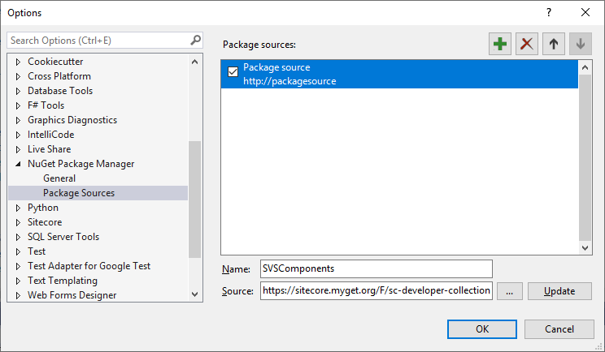
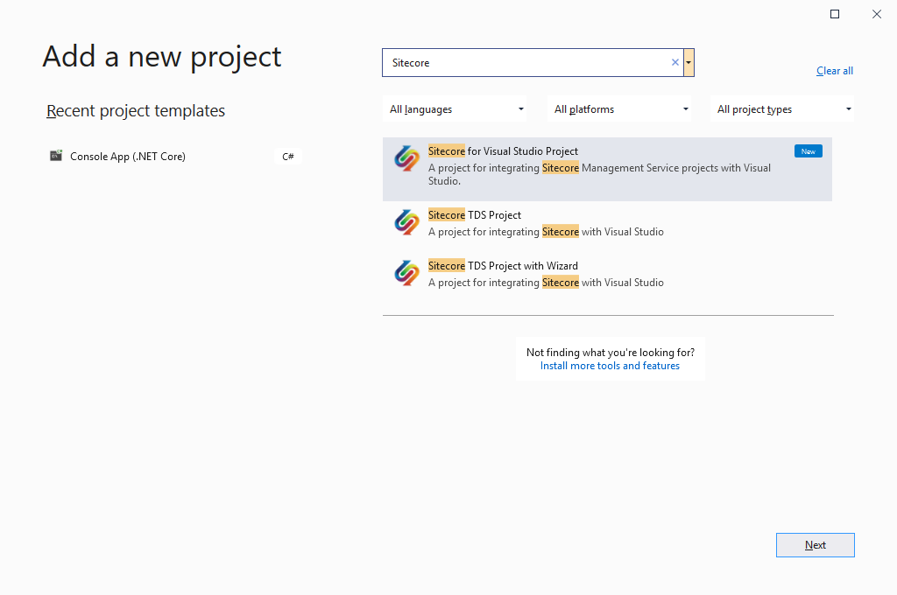
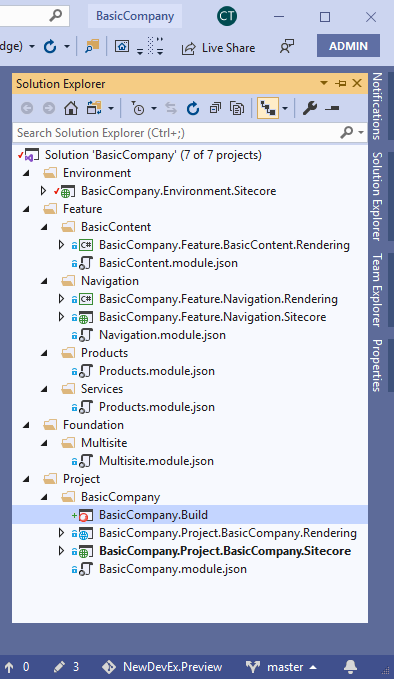
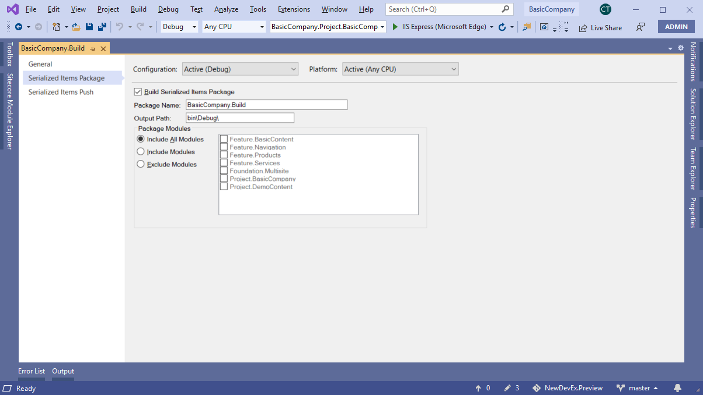
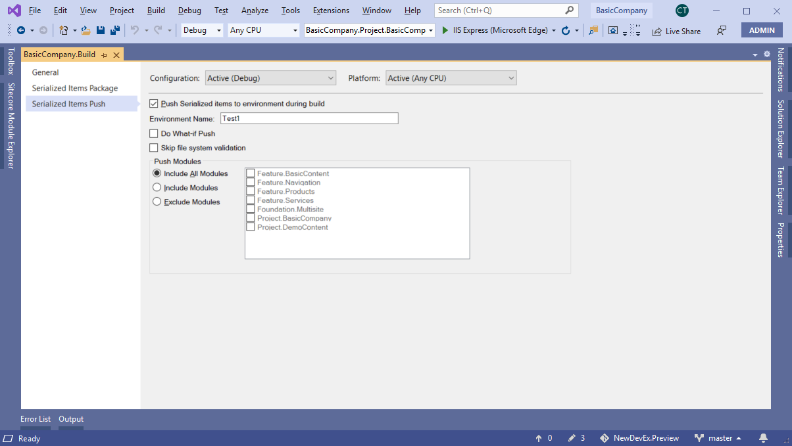

Automatic item synchronization at build time
How to use Sitecore for Visual Studio to automate item synchronization at build time.
You can create a build project in your solution to automate item serialization and item pushing at build time. Refer to Microsoft documentation on build configurations for more details.
Note
You can edit build project properties individually for the Debug and the Release build configurations.
Set up the developer collection NuGet feed
Sitecore for Visual Studio build projects depends on components from the developer collection NuGet package. To automatically download the package at build time, you must add the developer collection feed to your package sources.
The developer collection feed URL is https://sitecore.myget.org/F/sc-developer-collection/api/v3/index.json
You can add the developer collection feed to your NuGet.config file or to the package sources in Visual Studio.
The following is an example NuGet.config file with the developer collection feed:
<configuration>
<!--
Used to specify the default Sources for list, install and update.
-->
<packageSources>
<clear />
<add key="Nuget" value="https://api.nuget.org/v3/index.json" />
<add key="SitecorePreview" value="http://sitecore-nuget-preview:8010/index.json" />
<add key="SVSComponents" value="https://sitecore.myget.org/F/sc-developer-collection/api/v3/index.json"/>
</packageSources>
<activePackageSource>
<!-- this tells that all of them are active -->
<add key="All" value="(Aggregate source)" />
</activePackageSource>
</configuration>To add the developer collection feed to Visual Studio:
In Visual Studio with administrative privileges, click Tools, NuGet Package Manager, Package Manager Settings.
In the Options window, click
NuGet Package Manager/Package Sources.Click Add package source to add a new package source.
In the Name field, enter
SVSComponents.In the Source field, enter
https://sitecore.myget.org/F/sc-developer-collection/api/v3/index.json.Click Update then OK.
Create a build project
To create a build project:
In Solution Explorer, right-click your solution and click Add, New Project.
In the Add a new project window, search for and select
Sitecore for Visual Studio Projectand then click Next.In the Configure your new project window, enter a name and a location for your build project and click Create.
Your have now created a build project in your solution:
Note
It might take a few seconds for the NuGet package to be restored and for the build project to appear in Solution Explorer.
In most cases, you only need a single build project, but for more advanced scenarios, you can create more build projects and configure them to perform different operations at build time.
Edit a build project
To edit a build project:
In Solution Explorer, right-click the build project and click Properties. There are three tabs in the build project window:
General - Information about the property tabs.
Serialized Item Packages - Serialization of Sitecore instance items into a local package.
Serialized Items Push - Pushing of serialized items from your file system to your Sitecore instance.
Edit the relevant fields.
Save the build project.
Serialize items into a local package
To serialize items into a local package:
In Solution Explorer, right-click the build project and click Properties.
On the Serialized Items Package tab, select the Build Serialized Items Package check box.
In the Package Name field, enter a package name.
In the Package Modules section, select the modules you want to include and exclude.
Save the build project.
Note
Enabling item serialization is the same as running the sitecore package create command at build time.
Push items to your Sitecore instance
To push items to your Sitecore instance:
In Solution Explorer, right-click the build project and click Properties.
On the Serialized Items Push tab, select the Push Serialized items to environment during build check box.
To only simulate the push operation, select the Do What-if Push check box. This means that no serialized items are pushed to your Sitecore instance.
To skip validating the integrity of the serialized items in your file system before you push items, select the Skip file system validation check box.
In the Push Modules section, select the modules you want to include and exclude.
Save the build project.
Note
Enabling the push operation is the same as running the sitecore ser push command at build time.